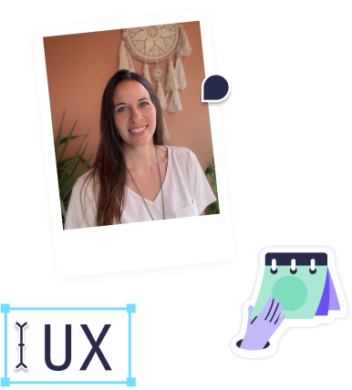
I use Jobs to be Done, empathy mapping, contextual interviews, polls, and heatmaps to uncover what users are actually trying to accomplish. This goes beyond surface behavior — I'm after the mental models and motivations that drive decisions, which shapes every design choice downstream.
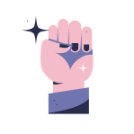
I synthesize user insights into journey maps, prioritization frameworks, and clear design rationale that connects to product metrics. I also use A/B testing to validate specific design decisions with real usage data, turning qualitative understanding into measurable outcomes.
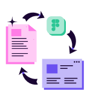
I run usability tests early and often, before solutions are locked in. Low-fidelity prototypes, task-based testing, and rapid iteration cycles mean we validate direction before investing in execution — catching wrong turns when they're still cheap to fix.
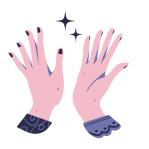
I work closely with engineers, PMs, and data teams — and I take technical constraints seriously, not as blockers but as design inputs. I can own a project end-to-end while staying aligned with the people who have to build and maintain what I design.
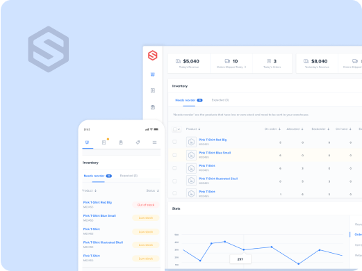
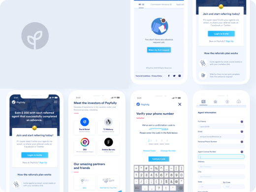
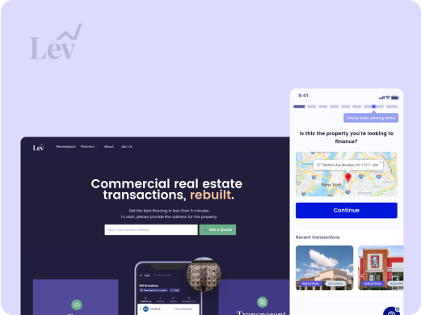
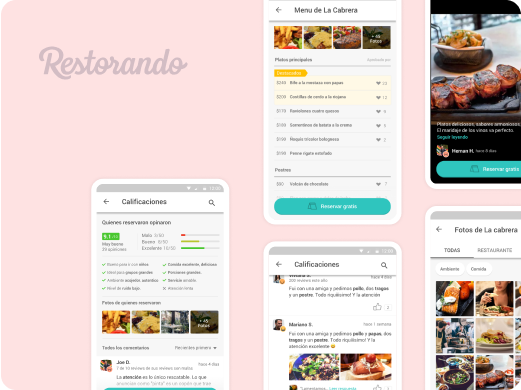
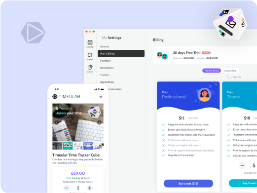
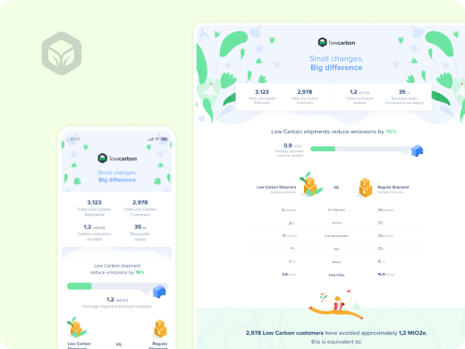
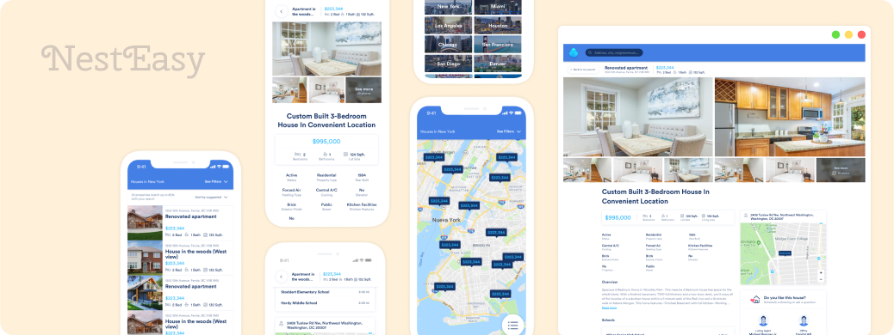
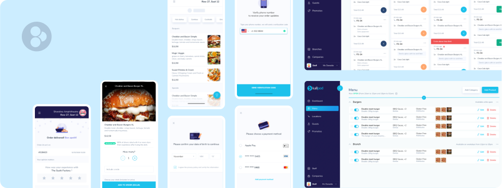

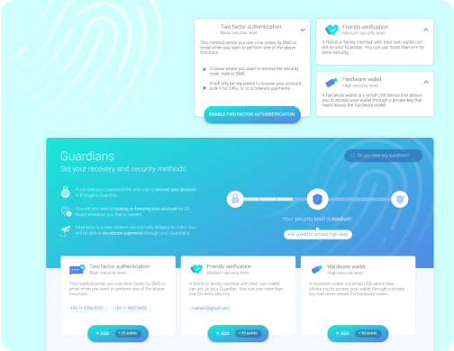
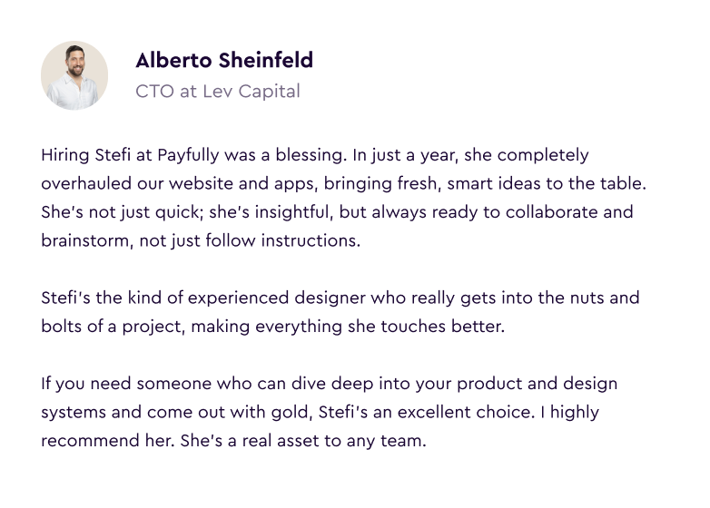
See Linkedin Reviews